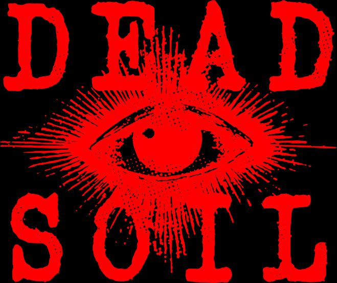
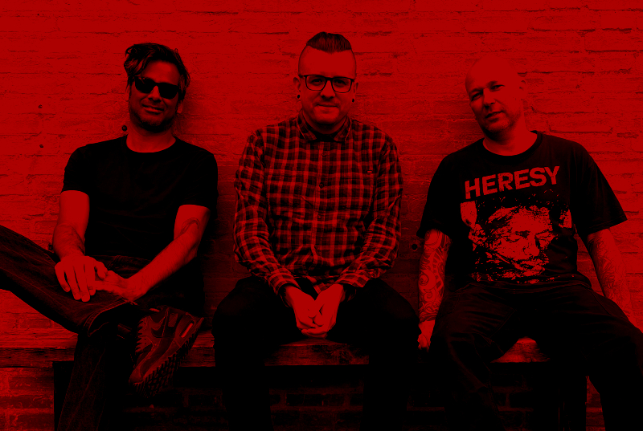

- [NEW] LIVE:NULL with visuals
- [NEW] LIVE:NULL on Spotify
- [NEW] LIVE:NULL on Apple Music
- Follow on Instagram
- Watch "Endless (Official Video)"
- Buy "231" on Cassette Tape
- Read the lyrics
-
Listen:
- Listen on Spotify
- Listen on Apple Music
- Listen on Bandcamp
- Listen on YouTube
-
Catch us Live:
- June 12th, 2026: Koornbeurs, Delft NL - Metalcafé XXL /w Radeloos///Ziedend, Lijkschouwer, Mould
For more information or enquiries email us at: hi@deadsoil.bio
Dead Soil is a Doom Industrial band hailing from the Netherlands. Danny: Guitars, Programming. Marc: Bass. Gaya: Vocals. Download press kit.
